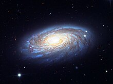

Las galaxias espirales son discos rotantes de estrellas y materia interestelar, con una protuberancia central compuesta principalmente por estrellas más viejas. A partir de esta protuberancia se extienden unos brazos en forma espiral, de brillo variable. Hay dos tipos normales y barradas.
Galaxia de forma espiral con brazos de formación estelar. Las letras minúsculas indican cuán sueltos se encuentran los brazos, siendo "a" los brazos más apretados y "c" los más dispersos.
Galaxias espirales barradas (SBa-c): Galaxia espiral con una banda central de estrellas. Las letras minúsculas tienen la misma interpretación que las galaxias espirales.
Galaxias Espirales Intermedias (SABa-c): Una galaxia que, de acuerdo a su forma, se clasifica entre una galaxia espiral barrada y una galaxia espiral sin barra.
